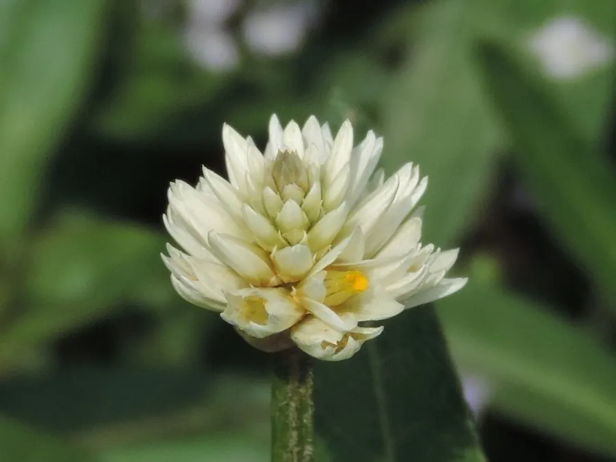

水生植物 · 植物界
空心莲子草 Alternanthera philoxeroides

原产南美的水陆两栖草本，茎中空、节上生根，叶片对生，繁殖极快，堵塞河道并侵占农田，是著名的外来入侵种。
- 分类
- 门被子植物门纲木兰纲目石竹目科苋科属莲子草属
- 栖息环境
- 池塘、沟渠、水田、湿地，以及潮湿的农田和路旁
- 地理分布
- 原产南美洲，中国长江流域及以南地区广泛归化
- 保护级别
- 暂无评估；被列入中国外来入侵物种名单
物种志
空心莲子草为苋科莲子草属多年生草本，水陆两栖。茎匍匐或上升，中空，节处易生不定根，长可达 1–2 米；叶片对生，椭圆至披针形，全缘，叶柄短。花生于叶腋，白色，密集成头状花序，花期 5–10 月。
空心莲子草原产南美洲，20 世纪 30 年代作为饲料引入中国，如今在长江流域及以南的池塘、沟渠、水田和湿地广泛归化。它靠茎段和根状茎进行营养繁殖，一个断节就能长成新植株，生长速度极快，常在水面形成厚密的“草垫”，堵塞航道、影响排灌，并使水下缺氧，抑制其他水生植物。在旱地上它同样能蔓延，侵占农田和果园。目前主要靠机械打捞、化学除草和生物防治控制，已被列入中国外来入侵物种名单。
形态与习性
- 茎匍匐或上升，中空，节处易生不定根
- 叶片对生，椭圆至披针形，全缘
- 花期5–10 月，花白色，密集成头状花序
- 繁殖以茎段和根状茎进行营养繁殖
- 危害水面形成草垫，堵塞航道、影响排灌
- 防治机械打捞、化学除草和生物防治
趣味知识
- 空心莲子草的茎是中空的，节上很容易长出新的根。
- 它的一段断茎就能长成新植株，因此打捞时反而会帮助它扩散。
- 它被列入中国外来入侵物种名单，是水田和河道中最难清除的杂草之一。